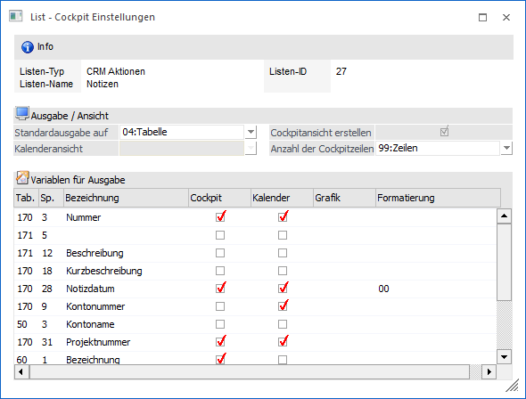
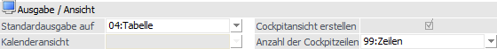
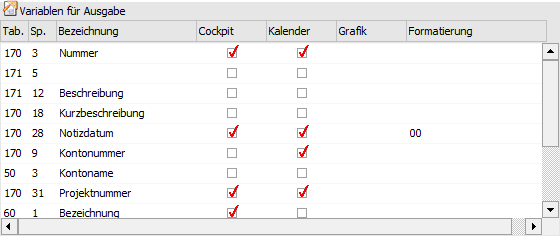
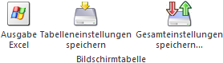
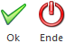

Durch Anwahl des Buttons "Cockpit Einstellungen" im Programm "Cockpit Definition" (Bereich "Liste") können die Einstellungen der Cockpit Darstellung einer WinLine LIST-Liste geändert werden.

Folgende Einstellungen stehen zur Verfügung:
Ausgabe / Ansicht

Ø Standardausgabe auf
Aus der Auswahlbox kann gewählt werden, wie die Ausgabe der Liste aus dem Cockpit heraus erfolgen soll. Dabei stehen die folgenden Optionen zur Verfügung:
ü 01 - Ausgabe Bildschirm
ü 03 - Ausgabe Kalender (nur bei den Listtypen "03 - Fakturen O.P", "16 - CRM Workflows", "17 - CRM Aktionen", "18 - CRM Workflows und Aktionen", "19 - Belegzeilen" und "27 - Zeitauswertung")
ü 04 - Tabelle
ü 07 - Grafik
ü 11 - Power Report
Ø Kalenderansicht
Wenn die Standardausgabe-Option "Ausgabe Kalender" (nur bei den Listtypen "03 - Fakturen O.P", "16 - CRM Workflows", "17 - CRM Aktionen", "18 - CRM Workflows und Aktionen", "19 - Belegzeilen" und "27 - Zeitauswertung" nutzbar) ausgewählt wurde, kann an dieser Stelle entschieden werden, in welcher Ansicht der Kalender bei der Ausgabe aus dem Cockpit heraus dargestellt werden soll. Hierfür stehen folgende Optionen zur Verfügung:
ü 0 - Monat
ü 1 - Woche
ü 2 - Tag
ü 3 - Arbeitswoche
Ø Cockpitansicht erstellen
Die Option "Cockpitansicht erstellen" bewirkt, dass für die Liste eine Cockpit-Ansicht erzeugt wird, wodurch diese im vollen Umfang innerhalb des Cockpits genutzt werden kann.
Hinweis
Die Option wird an dieser Stelle standardmäßig immer aktiviert.
Ø Anzahl der Cockpitzeilen
An dieser Stelle kann die Anzahl der Zeilen gewählt werden, welche maximal im Cockpit dargestellt werden sollen. Zur Auswahl stehen 3, 5, 10, 20, 50 oder 99 Zeilen.
Tabelle "Variablen"

In der Tabelle "Variablen" werden die einzelnen Spalten der WinLine LIST-Liste dargestellt. Folgende Informationen bzw. Einstellungen stehen hierbei zur Verfügung:
Ø Tab.
In dieser Spalte wird die interne Tabellennummer der auszugebenden Variable angezeigt.
Ø Sp.
An dieser Stelle wird die interne Spaltennummer der auszugebenden Variable angezeigt.
Ø Bezeichnung
In dieser Spalte wird die Bezeichnung (gemäß WinLine LIST-Definition) der auszugebenden Variable dargestellt.
Ø Cockpit
Mit Hilfe der Spalte "Cockpit" kann definiert werden, welche Spalten der Liste im Cockpit angezeigt werden sollen.
Ø Kalender
Bei Listen des Typs "03 - Fakturen O.P", "16 - CRM Workflows", "17 - CRM Aktionen", "18 - CRM Workflows und Aktionen", "19 - Belegzeilen" oder "27 - Zeitauswertung" kann in der Spalte "Kalender" definiert werden, welche Daten innerhalb des Kalenders dargestellt werden sollen.
Hinweis
Zur korrekten Darstellung eines Termins innerhalb eines Kalenders müssen auch die entsprechenden Datumsfelder mit der Option "Kalender" versehen werden.
Ø Grafik
Sofern Zahlenwerte in der Liste vorhanden sind, kann die Liste auch als Grafik ausgegeben werden. Dazu muss ein Wert als X-Achse und ein oder mehrere numerischer Werte als Y-Achse definiert werden, wobei hier mehrere Optionen zur Verfügung stehen:
ü X - Achse
Der Wert wird an der
X-Achse angedruckt.
ü X1 - Achse Aufsteigend
Sortiert
Der Wert wird an der X-Achse angedruckt, das Ergebnis wird
aufsteigend sortiert.
ü X2 - Achse Absteigend
Sortiert
Der Wert wird an der X-Achse angedruckt, das Ergebnis wird
absteigend sortiert.
ü Y - Achse
Der Wert wird an der
Y-Achse angedruckt, gibt somit die Höhe der Grafik an (Balken, Linie).
ü Y1 - Achse Aufsteigend
Sortiert
Der Wert wird an der Y-Achse angedruckt, das Ergebnis wird
aufsteigend sortiert.
ü Y2 - Achse Absteigend
Sortiert
Der Wert wird an der Y-Achse angedruckt, das Ergebnis wird
absteigend sortiert.
Ø Formatierung
Wenn es sich bei dem Feld um ein Datumsfeld handelt, dann kann entschieden werden, mit welcher Formatierung das Datum ausgegeben werden soll. Dabei stehen folgende Varianten zur Auswahl:
ü 00 - Standarddatum mit Uhrzeit
ü 01 - Standarddatum
ü 02 - kurzes Windowsformat
ü 03 - langes Windowsformat
Standardmäßig wird bei "normalen" Datumsfeldern der Typ "01 - Standarddatum" vorgeschlagen, bei Datumsfeldern einer CRM-Liste wird "00 - Standarddatum mit Uhrzeit" vorgeschlagen.
Hinweis
Diese Einstellung wird bei der Ausgabe auf Bildschirm/Drucker, im Cockpit, bei der Power Report-Ausgabe und bei der Ausgabe Tabellenkalkulation entsprechend berücksichtigt. Bei der Ausgabe auf Tabelle wird das Datum entweder mit oder ohne Uhrzeit dargestellt (d.h. das lange Windowsformat wird hier mit Datum/Uhrzeit umgesetzt).
Tabellenbuttons

Ø Ausgabe Excel
Durch Anwahl des Buttons "Ausgabe Excel" wird der Inhalt der Tabelle an Microsoft Excel übergeben.
Ø Tabelleneinstellungen speichern
Die Spalten einer Tabelle können grundsätzlich an beliebige Positionen verschoben, bzw. in der Breite entsprechend angepasst werden. Durch Anwahl des Buttons "Tabelleneinstellungen speichern" werden die Einstellungen benutzerspezifisch gespeichert und bei dem nächsten Aufruf des Programmpunktes wieder vorgeschlagen.
Ø Gesamteinstellungen speichern
Im Gegensatz zu "Tabelleneinstellungen speichern" können mit "Gesamteinstellungen speichern" mehrere Tabellenaufbauten gespeichert und nach Wunsch geladen werden. Zusätzlich werden Sonderfunktionen der Tabelle (z.B. "Spalte gruppieren") ebenfalls bei der Speicherung bedacht.
Buttons

Ø Ok
Durch Anwahl des Buttons "Ok" bzw. der Taste F5 werden die Cockpit Einstellungen gespeichert.
Ø Ende
Durch Anwahl des Buttons "Ende" bzw. der Taste ESC wird das Fenster geschlossen und alle nicht gespeicherten Angaben verworfen.